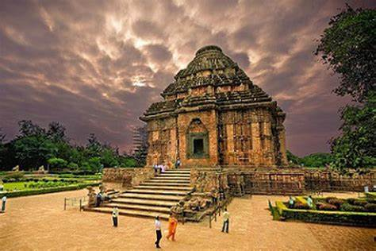

Welcome to the offician website of Odisha. For more information login to link.
The State

Odisha(Odia: ଓଡ଼ିଶା), is a state of India, located on the east coast of India, by the Bay of Bengal.
It is the modern name of the ancient nation of Kalinga, which was invaded by the Maurya Emperor Ashoka in 261 BC.
The modern state of Odisha was established on 1 April 1936 at Kanika Palace, Cuttack, as a province in India, and consists
predominantly of Odia speakers.The narrow, level coastal strip, including the Mahanadi River delta supports the bulk of the population.
The interior of the state is mountainous and sparsely populated. Deomali at 1672 m is the highest point of the state. Odisha is subject to intense cyclones.
The most intense one, in October 1999, Tropical Cyclone caused severe damage and some 10256 deaths. Odisha is home to the Hirakud Dam,
near Sambalpur the longest earthen dam in the world.Odisha has several popular tourist destinations. Puri, Konark & Bhubaneswar
are known as Golden triangle of eastern India. Puri, with the Jagannath temple near the sea (famous for Rath Yatra or the Car Festival), and Konark,
with the Sun Temple, are visited by thousands of tourists every year.